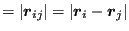
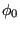

Next: Reactive Potentials Up: All-atom Potential Energy Functions Previous: All-atom Potential Energy Functions
Class-I potentials break down interatomic interactions between bonded and non-bonded interactions. Bonded interactions include bonds, valence angles, and both proper and improper dihedrals (Fig. 29). Non-bonded interactions include electrostatic and Lennard-Jones interactions. Class-I potentials apply for systems of fixed bonded topology; i.e., bonds between atoms are permanent, never breaking or forming. A simulation using a Class-I potential is therefore unable to model “chemistry”. Examples of Class-I potentials include CHARMM [18,19,20], AMBER [21], Gromos [22], OPLS [23,24], and TraPPE [25].
|
|
The general form of a Class-I potential is
| (258) | ||
| (259) | ||
| (260) | ||
| (261) |
The first four terms are the “bonded” potential. Each bond is treated like a harmonic spring, with a specific spring constant and equilibrium length . Similarly, every angle is also harmonic. Dihedrals (also called torsions) are periodic and therefore modeled with a trigonometric expansion; each dihedral may have a specific
for one or more values of  . Finally, impropers (improper dihedrals) refer to groupings of four atoms meant to be coplanar, such as three atoms bound to a nitrogen atom in a trigonal-planar configuration.
. Finally, impropers (improper dihedrals) refer to groupings of four atoms meant to be coplanar, such as three atoms bound to a nitrogen atom in a trigonal-planar configuration.
Fig. 29 depicts representative bonded features with atoms labeled to permit presentation of formulas for computing bond lengths, valence angles, dihedrals, and impropers. The measures are all defined conventionally using vector arithmetic and the right-hand rule for vector cross-products. The bond vector is defined
| (262) |
with magnitude
|  | (263) | |
| (264) |
For atoms  and
and  both bonded to
both bonded to  , the valence angle
, the valence angle
 is found via
is found via
| (265) |
For atoms  and
and  bonded to each other, the dihedral angle defined by atom
bonded to each other, the dihedral angle defined by atom  bonded to
bonded to  and atom bonded to
and atom bonded to  is found by computing the angle of intersection between the two planes defined by the
is found by computing the angle of intersection between the two planes defined by the  -
- /
/ -
- bonds and the
bonds and the  -
- /
/ - bonds.
- bonds.
| (266) |
Now, for improper dihedrals, this formula is usually sufficient because (a)  is zero for coplanarity and thus should be close to zero, and (b) always returns an angle on . However, for proper dihedrals (torsions), since these are fully periodic and not guaranteed to have symmetry of reflection about 0 or  , we must define on
, and the is not enough. So, the convention used to determine the sign of the torsion angle is to compute its sine:
, we must define on
, and the is not enough. So, the convention used to determine the sign of the torsion angle is to compute its sine:
| (267) |
The sign of is determined by its sine thusly:
| (268) |
Most Class-I potentials are based on the concept of context-specific “atom types”. For example, a carbon atom in an aliphatic chain is of a different type than a carbon atom in an aromatic ring, even though both are “carbon”. Then, bonds, angles, dihedrals, and impropers are classified by the types of their member atoms. This results in huge databases of potential parameters and the necessity to fully specify all bonded parameters for any system that is to be simulated. Luckily, most MD packages have helper routines to do just that.
Determining these parameters for a given force field is context-specific and therefore a bit of an art. Bonded potential parameters are mostly found by fitting the given analytical forms to series of single-point energy calculations peformed using high-level quantum-mechanical simulations. For example, parameters for the C1-C2-C3-C4 torsion in olefins was parameterized by sweeping the torsion angle of a quantum mechanical model of butane. Because most molecules involve a superpositition of such bonded potentials, their use confers a vibrational mode spectrum to molecules that can also be matched with experimental spectra for parameter adjustment.
Non-bonded parameters like charges and LJ parameters are adjusted so that errors in thermodynamics property calculations are minimized. This includes things like vacancy energies in solids, heats of vaporization in liquids, and volumetric equations of state. Most force-field developers strive to make their parameters sets as transferrable as possible, but one must always be aware of the context a force-field is most appropriate for. CHARMM and AMBER are used mainly to model biological molecules, while TRAPPE is pretty much strictly used for fluids. OPLS and GROMOS are used in a variety of settings.
It is important to note that all potentials considered so far assume each atom has a fixed partial charge (which may be zero). In fact, for class-I potentials, “charge” is an atom attribute wholly separate from its type, and they are usually derived from QM calculations on small fragments. Potentials for which the charge on each atom is a degree of freedom rather than a fixed quantity are described as “polarizable”. Polarizable potentials are not widely used, but there are good arguments for their requirement in situations where atoms with high polarizabilities might lead to local dipole moments that influence interatomic interactions.
One important polarizable model is the classical Drude oscillator, in which each atom is assigned a “ghost” particle tethered to its center that carries some of the charge. This allows each atom to behave like a literal “fluctuating dipole”, but it requires an extended Hamiltonian approach where the Drude particles' equations of motion are solved along with those of the atom nuclei, making Drude-enabled simulations substantially more expensive than fixed-charge simulations. For example, the polarizable version of CHARMM is called CHARMM-Drude [26,27].
cfa22@drexel.edu